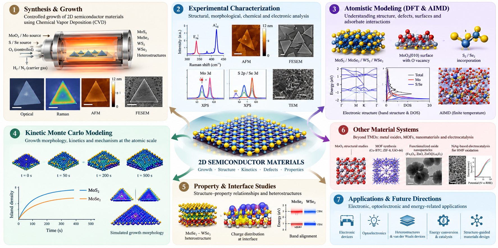

Computational materials & simulation
Atomistic modelling, energy calculations, and engineering simulation.
About /Academic journey
I completed my B.Tech in Mechanical Engineering at NIAMT, Ranchi, in 2026, with research experience in nano materials, porous materials, electrocatalysis, and computational mechanics.
Since June 2026, I have been working at the Advanced Electron Devices Lab, Department of Electrical Engineering, IIT Hyderabad, investigating the growth and characterization of 2D transition-metal dichalcogenides (MoS₂, MoSe₂, WS₂, and WSe₂) using CVD experiments and kinetic Monte Carlo (KMC) modelling to understand crystal morphology and growth kinetics
I am working on density functional theory (DFT), ab initio molecular dynamics (AIMD), and nudged elastic band (NEB) calculations to study structural disorder in MoO₃ and sulfur/selenium incorporation at oxide surfaces. My broader goal is to connect atomic-scale interactions, defects, and growth mechanisms with experimental observations through first-principles calculations, multiscale modelling, and experimental characterization.

Technical toolkit
Atomistic modelling, energy calculations, and engineering simulation.
Scientific computing, data processing, and computational analysis.
Experimental approaches to material preparation, deposition, and crystal growth.
Structural, morphological, chemical, and optical characterization.
Electrochemical measurements, capacitance analysis, and experimental data acquisition.
Explore